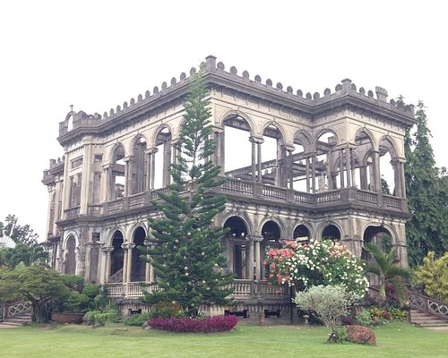
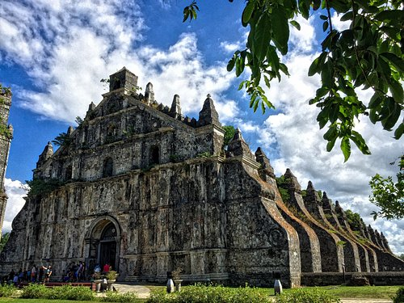

Buildings and Architecture of the Philippines
The Ruins
The Ruins, located in Talisay City, Negros Occidental, Philippines, is a historic mansion that has become one of the country's most iconic landmarks. Built in the early 1900s by the wealthy sugar baron, Don Mariano Ledesma Lacson, the mansion was designed as a symbol of luxury and grandeur. The structure was partially destroyed during World War II by the Japanese forces to prevent it from being used by the American soldiers. Despite the devastation, the mansion’s skeletal remains, with its towering columns and intricate architecture, have stood the test of time and become a popular tourist attraction.
Our Lady of Atonement Cathedral
The Our Lady of Atonement Cathedral, also known as Baguio Cathedral, is one of the most prominent landmarks in Baguio City, Philippines. Located on a hilltop, this Roman Catholic cathedral is renowned for its stunning neo-gothic architecture, featuring twin spires that rise dramatically against the city’s skyline. The cathedral is dedicated to the Our Lady of Atonement and serves as the seat of the Diocese of Baguio.
St. Augustine's Church
St. Augustine's Church, also known as Paoay Church, is a UNESCO World Heritage Site located in Paoay, Ilocos Norte, Philippines. Famous for its unique architectural style, the church is a prime example of the Baroque architecture found in the Philippines, specifically the "Earthquake Baroque" style, which was developed to withstand the frequent earthquakes in the region.